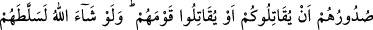
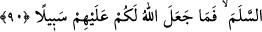

Allah yolunda göç edinceye kadar onlardan dostlar edinmeyin. Eğer yüz
çevirirlerse onları yakalayın, bulduğunuz yerde öldürün ve onlardan dost ve
yardımcı edinmeyin.
“Sizin de kendileri gibi inkâr etmenizi istediler ki onlarla eşit olasınız.” Bu, onların
inkârda aşırı gitmelerini, ısrarlarını, kendi inkâr ve sapıklıklarını beyân ettikleri
yetmiyormuş gibi başkalarını da saptırmaya çalıştıklarını göstermektedir. Onlar sizin de
küfrederek sapıklıkta kendileriyle eşit olmanızı arzuladılar. Burada şuna da işâret
vardır: Kim başkasının küfrünü arzu ederse, her ne kadar müslüman olduğunu ızhar etse
de bu onun içindeki küfrün işâretlerinden olur. Çünkü o müslümanla kâfirin inançlarının
bir olmasını istemektedir. Bu da insanın husûsiyetlerindendir. Bütün insanların kendi
mezhebi, îtikadı ve dîni üzere olmasını ister. Peygamber Efendimiz (s.a.v.) şöyle
buyurmuştur: “Küfre rızâ, küfürdür.”
“O halde Allah yolunda hicret edinceye kadar” yâni îmân edip de îmânlarını
dünyevî maksatlardan biri için değil sâdece Allah Teâlâ ve Rasûlü (a.s) için olan
hicretle gösterinceye kadar demektir. Allah’ın yolu ise izlenmesini emrettiği yoldur.
“Onlardan dostlar edinmeyiniz.” Yâni onların durumu sizin küfre girmenizi
arzulamak olduğuna göre artık siz de onlarla dost olmayın. Hicretle dışa vurulan bu
îmândan “eğer yüz çevirirlerse” gücünüz yettiği zaman “onları yakalayın”. Harem
içinde veyâ dışında “bulduğunuz yerde öldürün.” Çünkü onlar hakkındaki hüküm,
diğer müşrikler hakkındaki hüküm gibi esir almak ve öldürülmektir. “Ve onlardan dost
ve yardımcı edinmeyin.” Yâni onlardan tamâmen uzaklaşın, ebediyyen dostluklarını ve
yardımlarını kabul etmeyin.
Âyette seyr ilallahta olan talep ehline işâret vardır. Çünkü onlar, dünyâ ehlini dost
edinmekten, içinde bulundukları hırs, şehvet ve dünyâ sevgisini terkedip Hakk’ı talebde
kendilerine uymadıkça bir arada bulunmaktan men olunmuşlardır. Ayrıca onlara tesirli
öğütler vermeleri ve onların nefislerini ve nefislerinde galip olan sıfatları gördükçe
öldürüp yok etmeleri emrolunmuştur.
90- Ancak kendileriyle aranızda antlaşma bulunan bir topluma sığınanlar yâhut ne
sizinle ne de kendi toplumlarıyla savaşmak (istemediklerin) den yürekleri sıkılarak
size gelenler müstesna. Allah dileseydi onları başınıza belâ ederdi de sizinle
savaşırlardı. Artık onlar sizi bırakıp bir tarafa çekilir de sizinle savaşmazlar ve size